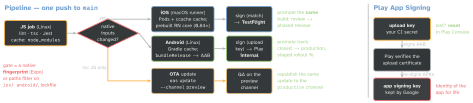

react-native · folio
In one line: An RN pipeline is two native builds (iOS on macOS, Android on Linux) around one JS codebase, plus an OTA lane for JS-only changes. Make it fast with lockfile-keyed caches, reproducible with signing secrets in the CI store (Android keystore, iOS via match/API key), and safe by promoting the tested artifact — never rebuilding for release. On Android you sign with an upload key; Google re-signs with the app signing key it keeps.
Download PDF Print view LaTeX source


Build matrix and caching
- Run cheap JS checks once on Linux; build natives only when native inputs changed; E2E (Detox/Maestro) on a sim/emulator for main or labelled PRs. macOS minutes cost the most.
- Cache keys = lockfiles:
yarn.lock/package-lock.json(node_modulesor the package cache),Podfile.lock(ios/Pods), Gradle wrapper +*.gradle*(gradle/actions/setup-gradle). A branch-only key goes stale. - Compile less: prebuilt RN core
.xcframeworks by default since 0.84;ccache(Podfile:ccache_enabled => true); Gradle configuration cache (0.79+); one ABI (reactNativeArchitectures=arm64-v8a) for debug/E2E only — store builds keep all.
Where it runs
| EAS | Build (cloud or --local), Submit, Update, Workflows (.eas/workflows/*.yml: build,
submit, update, fingerprint jobs); manages keystore + iOS certs (eas credentials) |
| fastlane | Ruby lanes on any CI: gradle, upload_to_play_store (supply),
match, gym, pilot — you own the machines |
| GitHub Actions / Bitrise | the runner + YAML/steps; call fastlane or EAS CLI from it |
Android signing
- Play App Signing is required for new apps (since Aug 2021, AAB): Google holds the app signing key; you sign uploads with the upload key. Lost/leaked upload key → upload-key reset; a self-held app key that is lost ends updates.
- Key:
keytool -genkeypair -v -storetype PKCS12 -keyalg RSA -keysize 2048 -validity 10000; Google: validity ≥ 25 years (past 22 Oct 2033). - The RN template signs release with the debug keystore until you add a
signingConfigs.release. Passwords from~/.gradle/gradle.properties(MYAPP_UPLOAD_STORE_PASSWORD…) or CI envORG_GRADLE_PROJECT_<name>; keystore as a base64 secret decoded in the job.
iOS signing in CI
Same rules as native: match (readonly) or EAS-managed certs, an App Store
Connect API key for upload, temp keychain per job — see signing-and-cicd.
QA builds before the store
iOS: TestFlight internal (no review) or ad hoc; Android: Play internal testing track (up to 100 testers) or Firebase App Distribution; EAS: internal distribution builds. Dev builds (expo-dev-client) are for engineers, never for QA sign-off.
Example — Android release job (GitHub Actions)
android:
runs-on: ubuntu-latest
steps:
- uses: actions/checkout@v4
- uses: actions/setup-node@v4
with: { node-version: 22, cache: yarn }
- uses: actions/setup-java@v4
with: { distribution: zulu, java-version: 17 }
- uses: gradle/actions/setup-gradle@v4 # Gradle cache
- run: yarn install --frozen-lockfile
- run: echo "$KS" | base64 -d > android/app/upload.keystore
env: { KS: "${{ secrets.UPLOAD_KEYSTORE_B64 }}" }
- run: ./gradlew bundleRelease -PversionCode=${{ github.run_number }}
working-directory: android
env: # read by signingConfigs.release as project properties
ORG_GRADLE_PROJECT_MYAPP_UPLOAD_STORE_PASSWORD: ${{ secrets.KS_PW }}
ORG_GRADLE_PROJECT_MYAPP_UPLOAD_KEY_PASSWORD: ${{ secrets.KEY_PW }}Versions, OTA, promotion
versionName/versionis for humans;versionCode(integer) and iOSbuildNumbermust rise on every upload — derive from the CI run number, or EAScli.appVersionSource: "remote"+autoIncrement: true(recommended since EAS CLI 12; it does not touchversion).- OTA: each build profile carries a channel; an update reaches only builds with the same runtimeVersion. Test on
preview, theneas update:republish --destination-channel production(same bundle); gradual:eas update --rollout-percentage 10,eas update:edit; undo:eas update:rollback. - Stores: TestFlight → review → phased release; Play internal → closed → production with a staged rollout you can halt.
Traps
- “Signed release” that is debug-signed — the template default.
- Two CI runs uploading the same
versionCode: the second is rejected. - A JS-only OTA that needs a new native module crashes old binaries — gate on runtimeVersion/fingerprint.
- Rebuilding for production after QA: you ship an untested binary.
- Secrets in
EXPO_PUBLIC_*or.envend up in the bundle — CI secrets are for the build, not the app.